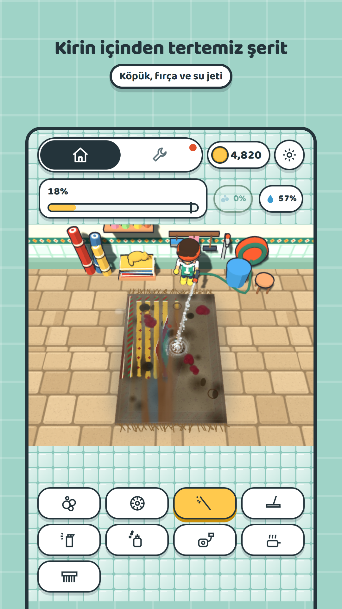
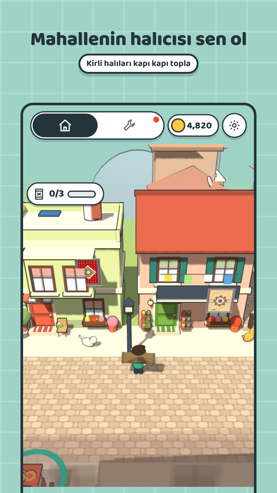
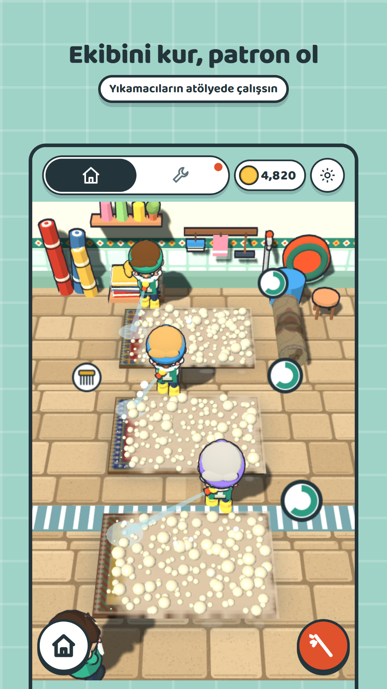

Rugsy: Halı Yıkama Oyunu
Rugsy, 3B bir Türk mahallesinde geçen rahatlatıcı bir halı temizleme oyunu. Mahallenin halıcısı sensin: kirli halıları kapılardan topluyor, dükkanında köpük, fırça ve basınçlı suyla yıkıyor, avludaki ipte kurutup sahibine teslim ediyorsun. Oyun ücretsiz, internetsiz çalışıyor ve ekranda hiç yazı yok.
Son güncelleme: 2 Kasım 2026 · Sürüm 1.6



Nasıl oynanır?
- Topla. Ekrana dokunup kumandayla halıcıyı yürüt. Balkonunda halı silkelenen evin kapısındaki halkaya girince kirli halı omzuna geçiyor.
- Yıka. Dükkanın tezgahına gelince yıkama ekranı açılıyor. Köpük kiri yumuşatıyor, fırça söküyor, basınçlı su kalın kirin içinden temiz bir şerit açıyor, çekpas suyu topluyor.
- Kurut. Yıkanan halı avludaki ipe asılıp kuruyor.
- Teslim et. Kuruyan halıyı sahibinin kapısına götürüyorsun. Sahibi el sallayıp ödüyor, ev boyanıyor ve halın balkondan sarkıyor.
Oyunda neler var?
- Aletler: köpük, fırça, basınçlı su ve çekpas; kazandıkça leke ilacı, halı parfümü, ıslak vakum ve buhar.
- Halılar: kapı paspası, salon halısı, shaggy, evcil hayvan lekeli halı, ipek ve antika halı. Renkli modern desenler ve Uşak, Milas, Bergama, Kayseri, Ladik, Hereke, Yağcıbedir gibi yöresel dokumalar.
- Kirin altından çıkanlar: altın küpe, alyans, kayıp anahtar, kehribar tespih, misket, eski fotoğraf.
- Mahalle: sekiz ev, simitçi, kapı önünde sohbet eden teyzeler, parkta top oynayan çocuklar, iş yaptıkça çoğalan kediler, akşamları pembe ışık.
Sık sorulanlar
Rugsy ücretsiz mi?
Evet. Oyun ücretsiz. İsteyen tek seferlik destek paketini alıp reklamları kapatabilir.
Oyunda reklam var mı?
Ödüllü reklamlar yalnızca oyuncu düğmeye basınca açılıyor. Geçiş reklamı yalnızca iki oyun günü arasında çıkıyor, halı yıkarken hiç çıkmıyor. Banner yok.
İnternetsiz oynanır mı?
Evet. Oyun tamamen telefonda çalışıyor; yalnızca reklamlar için internet gerekiyor.
Hangi dillerde oynanır?
Oyunda okunacak yazı yok: simgeler, renkler ve rakamlar kullanılıyor. Bu yüzden her dilden oyuncu oynayabiliyor.
Çocuklar oynayabilir mi?
Oyunda şiddet ya da okuma gerektiren bir şey yok, ekran simgelerle yönetiliyor. Reklamlar kişiselleştirilmemiş olarak isteniyor.
Rugsy oyununda ne yapılıyor?
Mahallede yürüyüp halısı kirli evlerin kapısından halıyı alıyorsun, dükkanda köpük, fırça ve basınçlı suyla yıkıyorsun, avludaki ipte kurutup sahibine teslim ediyorsun. Her teslimde ev boyanıyor.